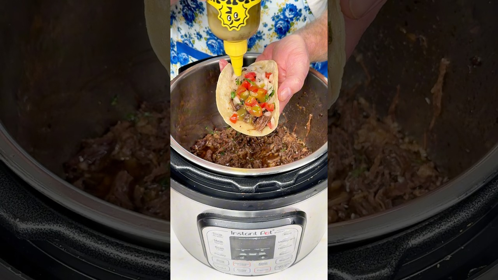

Cook 50 minutes at high pressure, plus sear and pressure-release time
| Course | Main Dish |
| Categories | Beef, Wrap |
| Collections | Instapot, Drew Cooks |
| Source | Drew Cooks – YouTube |
| Notes | see “Notes” below |

Reconstructed from the video's narration (spoken recipe) — the video has no written recipe in its description. Quantities and steps below are only those actually stated out loud; see "Gaps in this export" for what wasn't specified.
2 1/2 lb chuck roast, cut into smaller pieces
1 Tbsp chili powder
2 tsp kosher salt
2 tsp dried minced onion
1 tsp cumin
1 tsp garlic powder
1 tsp dried oregano
A little black pepper
2 Tbsp avocado oil
3/4 cup beef broth
1 lime
Chopped cilantro (optional)
Toasted tortillas, to serve
Pico de gallo, to serve
Your favorite salsa, to serve
Cut the chuck roast into smaller pieces.
In a mixing bowl, combine the chili powder, kosher salt, dried minced onion, cumin, garlic powder, dried oregano, and black pepper. Mix together.
Add each piece of beef to the bowl and turn to coat well in the spice mix.
Add the avocado oil to the Instant Pot and turn on the sauté function. Once hot, add the beef and sear well on all sides.
Turn off sauté. Add 3/4 cup beef broth.
Lock the lid, make sure the vent is closed, and set to high pressure for 50 minutes.
Once the time is up and the pressure has released, remove the lid.
Using a slotted spoon, move the beef to a plate and shred it with two forks.
Return the shredded beef to the Instant Pot and stir it into the juices.
Squeeze in the juice of 1 lime. Stir in chopped cilantro if using.
Fill toasted tortillas with the beef, pico de gallo, and salsa. Serve.
Gap in this export: Number of servings / how many tacos it makes
Gap in this export: Whether to use a natural or quick pressure release (only "once it's done venting")
Gap in this export: Number of tortillas
Gap in this export: Amount of black pepper, cilantro, pico de gallo, and salsa